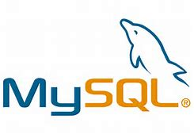

Name |
: |
Fischella Angieta Chelsea |
|---|---|---|
Nim |
: |
L200170077 |
Class |
: |
A |
PENGERTIAN SISTEM MANAJEMEN BASIS DATA
Sistem Manajemen Basis Data
atau yang lebih dikenal dengan DBMS (Database Management System) adalah sebuah teknologi sistem informasi untuk penyimpanan dan pengambilan data pengguna dengan efisienl dengan tindakan pengamanan yang tepat Database adalah kumpulan data dan data terkait yang merupakan koleksi fakta, bisa berupa tulisan atau gambar yang bisa diolah untuk menghasilkan informasi. Sebagian besar data mewakili fakta yang dapat direkam. Alat bantu data dalam menghasilkan informasi, yang didasarkan pada fakta. Misalnya, jika kita memiliki data tentang nilai yang diperoleh oleh semua siswa di kelas, kita dapat menyimpulkan tentang siapa murid yang mendapatkan 10 nilai tertinggi untuk menyimpulkan ranking siswa dikelasTujuan utama penggunaan DBMS:
Tujuan utama penggunaan DBMS dalam jaringan komputer adalah untuk menghindari kekacauan dalam hal pengolahan data yang jumlahnya besar. DBMS merupakan perantara bagi pengguna dan database (baca: pengertian database), dan agar dapat berinteraksi dengan DBMS maka pengguna harus memakai bahasa database yang sudah ditentukan.Macam-macam DBMS
- MySQL -Perangkat lunak DBMS yang pertama adalah MySQL yang banyak digunakan karena memang tersedia secara gratis. Sehingga aplikasi ini cocok digunakan untuk bisnis-bisnis yang sedang berkembang.Perangkat lunak DBMS yang pertama adalah MySQL yang banyak digunakan karena memang tersedia secara gratis. Sehingga aplikasi ini cocok digunakan untuk bisnis-bisnis yang sedang berkembang.Meskipun tidak berbayar, namun tingkat keamanannya cukup baik dengan kecepatan akses data yang selalu stabil. Akan tetapi perangkat ini kurang kompatibel dengan bahasa pemograman Foxpro, Visual Basic (VB) dan Delphi serta kurang mampu menangani data yang jumlahnya terlalu besar.
- Oracle - Perangkat ini memiliki beragam fitur yang dapat memenuhi tuntutan fleksibilitas perusahaan besar. Bahkan perangkat ini juga memiliki pemrosesan transaksi dengan peforma yang sangat tinggi.
- Microsoft SQL Server - Microsoft SQL Server memiliki sistem pengamanan data yang baik dan memiliki fitur back up, recovery dan rollback data. Namun sayangnya perangkat ini hanya bisa berjalan pada OS Windows saja.
- Firebird - Perangkat lunak DBMS lainnya adalah Firebird sebagai sistem manajemen basis data yang relasional. Firebird menawarkan fitur yang sesuai dengan standar SQl-2003 dan ANSI SQL-99 serta dapat bekerja pada OS Windows dan Linux.
User Sistem Manajemen Basis Data
Sistem Manajemen Basis Data memiliki pengguna dengan hak akses dan izin berbeda yang menggunakannya untuk tujuan yang berbeda. Beberapa pengguna bisa edit, delete, menambahkan, mengubah data dan beberapa pengguna hanya bisa melihat data dan tidak bisa, edit, delete, create dan update data. Pengguna Sistem basis data dapat dikategorikan secara luas sebagai berikut:- Administrator - Administrator menjaga sistem basis data dan bertanggung jawab untuk mengadministrasikan database. Mereka bertanggung jawab untuk menjaga penggunaannya dan mengatur user siapa aja yang bisa mengakses database. Administrator juga menjaga sumber daya DBMS seperti lisensi sistem, alat yang dibutuhkan, dan maintenance software dan hardware database.
- Desainer - Desainer adalah kelompok orang yang benar-benar bekerja pada bagian perancangan database. Mereka terus mencermati data apa yang harus disimpan dan dalam format apa. Mereka mengidentifikasi dan merancang keseluruhan entitas, relasi, batasan, dan pandangan.
- End Users - End Users adalah mereka yang benar-benar menggunakan database dari sistem basis data itu sendiri .